The objective of this module is to provide an introduction to statistical inference and hypothesis testing by introducing the idea of confidence intervals around statistics.
The standard error for a statistic that we calculate given its sampling distribution or that we estimate based on a particular sample can be used to derive another measure of uncertainty in the statistic value - the confidence interval, or CI. The CI is another way of describing a statistic’s sampling distribution, and it plays a central role in basic inferential statistics.
Conceptually, the confidence interval is an interval around our estimate of mean of the sampling distribution for a particular statistic (typically a mean), and it gives us a range of values into which subsequent estimates of a statistic would be expected to fall some critical proportion of the time, if the sampling exercise were to be repeated. We can talk thus about different confidence intervals (e.g., 50%, 95%, 99%), where, intuitively, higher confidence is associated with a wider interval. The “95% CI” around a statistic, for example, describes the range of values into which a new estimate of the statistic, derived from a subsequent sample, would be expected to fall 95% of the time. The “99% CI” around the initial statistic would be slightly wider, while the “50% CI” would be narrower.
Calculating Theoretical CIs
Theoretical confidence intervals typically represent the range of values corresponding to the central X% of a given sampling distribution with a mean of \(m\) and a standard deviation of \(se\). We can calculate theoretical CIs in several ways.
The typical way to calculate a confidence interval is as the value of the statistic being considered \(±\) some critical value\(\times\) the standard error of the statistic, where the critical value is determined with respect to the quantiles bracketing the central proportion of interest for a particular zero-centered, standardized theoretical distribution (e.g., the standard normal or the Student’s\(t\)). The lower and upper limits of this CI thus should bracket the central proportion of interest of the sampling distribution of the statistic.
Alternatively, we can calculate the lower and upper limits directly from the appropriate quantile values of the relevant non-standardized version of the particular theoretical distribution (e.g., the normal, with mean \(m\) and standard deviation \(se\)).
For large sample sizes (\(n\) ≥ ~30), the theoretical distribution used to define the critical values and the relevant quantiles is typically the normal distribution, while for smaller sample sizes (\(n\) < ~30), a Student’s t distribution is used. This is because, according to the Central Limit Theorem (see below), the sampling distribution for many summary statistics (such as the mean) tends to be normal when sample size is reasonably large.
As an example CI calculation, we will generate a vector, v, of 10,000 random numbers selected from a normal distribution with a mean of 25 and standard deviation of 10. We then will estimate the mean, standard deviation, and standard error based on a sample of 40 observations drawn from that vector and then use these to calculate the theoretical 95% CI.
First, we generate our vector of random numbers and calculate the relevant summary statistics…
(se <- sigma/sqrt(length(s))) # if population standard deviation is known
## [1] 1.581139
(sd <-sd(s))
## [1] 10.35182
(se <-sd(s)/sqrt(length(s))) # if population standard deviation is unknown
## [1] 1.636766
# alternatively, we could use `sciplot::se(s)`(se <- sciplot::se(s))
## [1] 1.636766
Now, to calculate the 95% CI around our estimate of the mean, we need to calculate the critical values that delimit the central 95% of the standard normal distribution and then use these to define the upper and lower bounds of the 95% CI around our sample mean. The central 95% of a distribution is that falling between the 2.5% and 97.5% quantiles (i.e., all but 2.5% of the distribution in the lower and upper tails). If we define \(\alpha\) as \(1-CI/100\), then what we want to find is the \(\alpha/2\) and \(1 - (\alpha/2)\) quantiles, i.e., the \(0.025\) and \(0.975\) quantiles. [As we will see below, mathematically, this is equivalent to ± the \(0.975\) quantile.]
We use the “quantile” function for the standard normal function (qnorm() with mean=0 and sd=1, which are the default argument values) to generate these critical values.
Recall that when we give the qnorm() function a particular percentile value as an argument, it returns a number, \(X\), below which that proportion of the cumulative probability distribution falls, and when we are considering a standard normal distribution, \(X\) is in units of standard deviations. Thus, qnorm(0.025, mean=0, sd=1) tells us the number of standard deviations (roughly -1.96) away from a mean (of 0) that corresponds to up to 2.5% of the cumulative probability distribution for a standard normal curve. Similarly, qnorm(0.975, mean=0, sd=1) tells us the number of standard deviations (roughly +1.96) away from the mean up to which 97.5% of the standard normal distribution falls. 95% of the standard normal distribution falls between these two values. Thus, to calculate the CI for our sampling distribution, we can do the following:
percent_ci <-95alpha <-1- percent_ci/100# alpha = 0.05lower <- m +qnorm(alpha/2) * se# where qnorm(alpha /2) is the 2.5% quantile of the standard normal# distributionupper <- m +qnorm(1- alpha/2) * se# where qnorm(1 - alpha / 2) is the 97.5% quantile of the standard normal# distribution(ci <-c(lower, upper))
## [1] 21.29988 27.71589
An easier way to do this is simply as follows:
(ci <- m +c(-1, 1) *qnorm(1- alpha/2) * se)
## [1] 21.29988 27.71589
because these ways of calculating the lower CI bound are equivalent:
(lower <- m +1*qnorm(alpha/2) * se)
## [1] 21.29988
(lower <- m +-1*qnorm(1- alpha/2) * se)
## [1] 21.29988
We could also do this…
# get the value associated with the alpha / 2 lower tail(lower <- m +qnorm(alpha/2) * se)
## [1] 21.29988
# get the value associated with the alpha / 2 upper tail(upper <- m +qnorm(alpha/2, lower.tail =FALSE) * se)
## [1] 27.71589
And we can also make our own generic CI() function based on assuming that our the sampling distribution for our estimate of the mean is normal:
CI <-function(x, level =0.95) { alpha <-1- level ci <-mean(x) +c(-1, 1) *qnorm(1- (alpha/2)) *sqrt(var(x)/length(x))return(ci)}CI(s)
## [1] 21.29988 27.71589
Finally, we could also characterize the central CI% of the sampling distribution directly by calling the qnorm() function on a non-standardized normal distribution. This is less common, though, because it is less easily applied to distributions other than the normal family (e.g., to the \(t\) distribution).
(lower <-qnorm(alpha/2, m, se))
## [1] 21.29988
(upper <-qnorm(1- alpha/2, m, se))
## [1] 27.71589
The following code will let us interactively visualize CIs around an estimate of a mean with a normal sampling distribution.
There are two ways that CIs are generally interpreted:
Based on the given data (with a particular mean, variance, and sample size), we are \(X\)% confident that the true mean of the population lies between the lower and upper bounds.
The mean of a repeated sample of the same size drawn from this same underlying distribution is expected to fall into the given interval \(X\)% of the time.
14.4 The Central Limit Theorem
Our construction of CIs thus far has implicitly taken advantage of one of the most important theorems in statistics, the Central Limit Theorem (CLT). The key importance of the CLT for us is that it states that the sampling distribution of averages (or sums or other summary statistics…) of “independent and identically distributed” (or \(iid\)) random variables approaches a normal distribution as the sample size increases. It is this fact that allows us to have a good sense of the mean and distribution of average events in a population even though we only observe one or a small number of samples of those events and even though we do not know what the actual population distribution is! In fact, the CLT says nothing about the probability distribution for events in the original population, and that is exactly where its usefulness lies… that original probability distribution can be normal, skewed, exponential, or even all kinds of odd!
TL/DR: The CLT means can we typically assume normality for the sampling distribution, i.e., for the distribution of the sample mean (or of the sample sum or the sample mode, etc…) no matter what kind of probability distribution characterizes the initial population, as long as our sample size is large enough and our samples are independent and identically distributed. It is thus the CLT that allows us to make inferences about a population based on a sample.
Just to explore this a bit, let’s do some simulations. We are going to take lots of averages of samples from a particular non-normal distribution and then look at the distribution of those averages.
Imagine we have some event that occurs in a population according to some probability mass function like the Poisson where we know \(\lambda=14\). Recall that the expectations of \(\mu\) and \(\sigma^2\) for the Poisson distribution are both equal to \(\lambda\).
Now let’s imagine taking a bunch of random samples of size 10 from this population. We will take 1000 random samples of this size, calculate the average of each sample, and plot a histogram of those averages… it will be close to normal, and the standard deviation of those averages - i.e., the SD of the sampling distribution - should be roughly equal to the estimated standard error, i.e., the square root of (expected variance / sample size). Recall that for a Poisson distribution that \(\lambda\) is the expected variance, so the estimated standard error is simply the \(\sqrt{\lambda/n}\)
lambda <-14n <-10(se <-sqrt(lambda/n))
## [1] 1.183216
# the estimated SE, here, based on an estimate of the population variance if# availablepar(mfrow =c(1, 3))hist(rpois(10000, lambda = lambda), probability =TRUE, xlab ="X", main ="Original Distribution")x <-vector(length =1000) # dummy variable to hold sample meansfor (i in1:1000) { x[[i]] <-mean(rpois(n = n, lambda = lambda))}hist(x, breaks =seq(from =min(x), to =max(x), length.out =20), probability =TRUE,xlab ="Mean x", main ="Sampling Distribution")(se <-sd(x))
## [1] 1.160762
# the estimated SE, here based on the standard deviation of the actual sampling# distributionqqnorm(x)qqline(x)
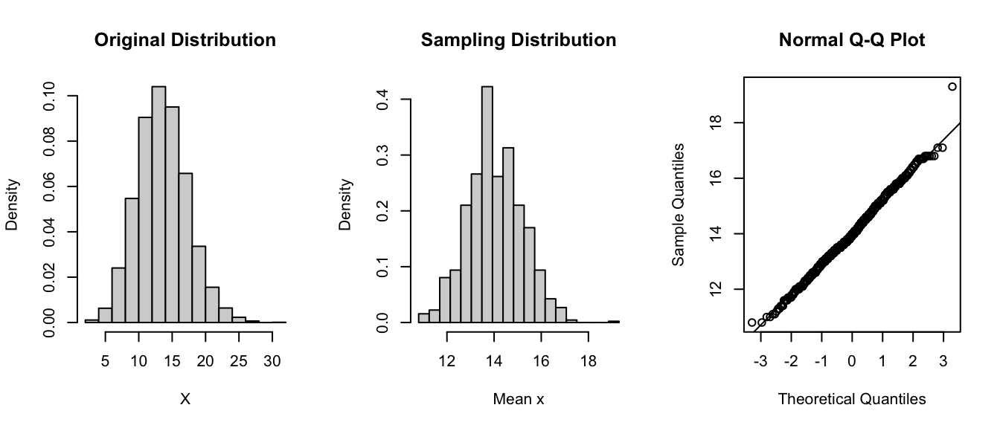
Let’s now do the same for samples of size 1000. We see that the mean of the sampling distribution stays essentially the same, the distribution is still normal, but the standard deviation - the spread - of the sampling distribution is lower.
lambda <-14n <-1000(se <-sqrt(lambda/n))
## [1] 0.1183216
# the estimated SE, here, based on an estimate of the population variance if# availablepar(mfrow =c(1, 3))hist(rpois(10000, lambda = lambda), probability =TRUE, xlab ="x", main ="Original Distribution")x <-vector(length =1000)for (i in1:1000) { x[[i]] <-mean(rpois(n = n, lambda = lambda))}hist(x, breaks =seq(from =min(x), to =max(x), length.out =20), probability =TRUE,xlab ="Mean X", main ="Sampling Distribution")(se <-sd(x))
## [1] 0.1179025
# the estimated SE, here based on the standard deviation of the actual sampling# distributionqqnorm(x)qqline(x)
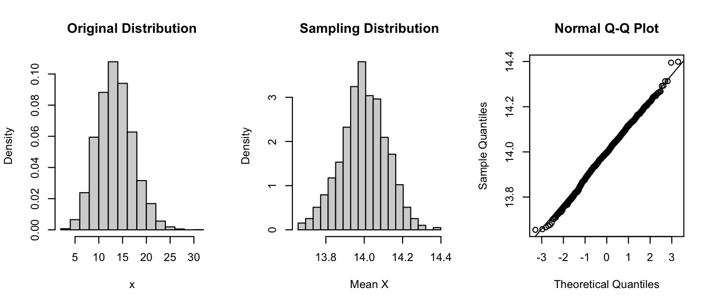
Note that the sampling distribution gets narrower as the sample size increases.
We can convert the sampling distribution to a standard normal by subtracting off the mean of the distribution and dividing by the standard deviation and then plotting a histogram of those values along with a normal curve.
par(mfrow =c(1, 2))hist(x, breaks =seq(from =floor(min(x)), to =ceiling(max(x)), length.out =20),probability =TRUE)z <- (x -mean(x))/sd(x) # converts the vector of means to z scoreshist(z, breaks =seq(from =min(z), to =max(z), length.out =20), probability =TRUE,ylim =c(0, 0.5)) # plots the histogram of z scorescurve(dnorm(x, 0, 1), -4, 4, ylim =c(0, 0.5), xlab ="Z", ylab ="Density", add =TRUE) # plots a standard normal curve
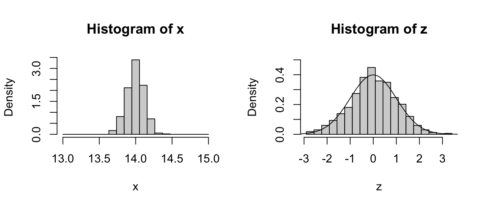
Pretty normal looking, right?
Here’s an example of the CLT in action using the sum() of our random variables instead of the mean() as the statistic of interest …
lambda <-14n <-1000par(mfrow =c(1, 3))hist(rpois(10000, lambda = lambda), probability =TRUE, xlab ="X", main ="Original Distribution")x <-vector(length =1000)for (i in1:1000) { x[[i]] <-sum(rpois(n = n, lambda = lambda))}hist(x, breaks =seq(from =min(x), to =max(x), length.out =20), probability =TRUE,xlab ="Sum X", main ="Sampling Distribution")# convert the sampling distribution to standard normalz <- (x -mean(x))/sd(x)hist(z, breaks =seq(from =-4, to =4, length.out =20), probability =TRUE)# plots a standard normal curvecurve(dnorm(x, 0, 1), -4, 4, ylim =c(0, 0.5), xlab ="Z", ylab ="Density", add =TRUE)
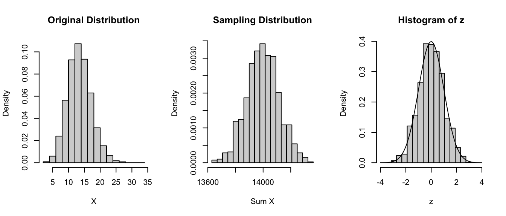
Again, pretty normal looking!
Trying this for an intial beta rather than Poisson distribution…
alpha <-1.1beta <-2.9n <-1000par(mfrow =c(1, 3))hist(rbeta(10000, shape1 = alpha, shape2 = beta), probability =TRUE, xlab ="X",main ="Original Distribution")x <-vector(length =1000)for (i in1:1000) { x[[i]] <-mean(rbeta(n = n, shape1 = alpha, shape2 = beta))}hist(x, breaks =seq(min(x), max(x), length.out =20), probability =TRUE, xlab ="Mean X",main ="Sampling Distribution")# convert the sampling distribution to standard normalz <- (x -mean(x))/sd(x)hist(z, breaks =seq(from =-4, to =4, length.out =20), probability =TRUE)# plots a standard normal curvecurve(dnorm(x, 0, 1), -4, 4, ylim =c(0, 0.5), xlab ="Z", ylab ="Density", add =TRUE)
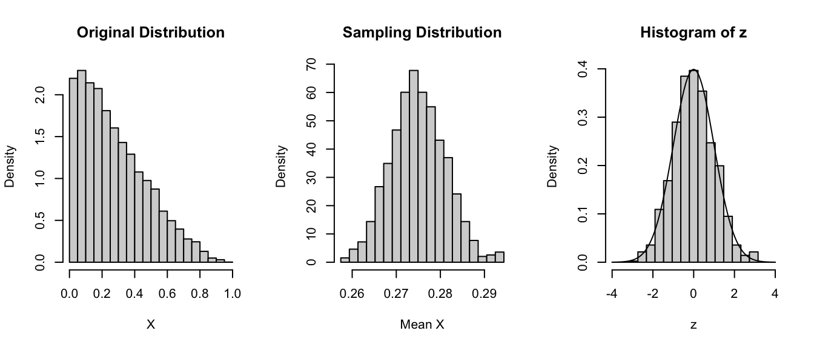
Once again, the sampling distribution is normal, even though the original distribution is far from it!
Take Home Points:
[1] The CLT states that, regardless of the underlying probability distribution of a population of independent, identically distributed (\(iid\)) random variables, the distribution of a statistic (e.g., means, or sums or standard deviations, etc…) for samples drawn from that underlying distribution:
will be approximately normal,
will be centered at the population mean for the statistic, and - will have a standard deviation roughly equal to the standard error of the mean for the statistic.
Additionally, it suggests that variables that are expected to be the sum of multiple independent processes (e.g., measurement errors) will also have distributions that are nearly normal.
[2] Calculating a statistic based on this distribution (e.g., the mean) and adding/subtracting the relevant standard quantile\(\times\) the standard error yields a confidence interval for the relevant statistic, which gets wider as the coverage increases and gets narrower with less variability or larger sample sizes.
[3] As sample size increases, the standard error of the statistic decreases and the sampling distribution becomes more and more normal (i.e., has less skew and kurtosis, which are higher order moments of the distribution).
For a nice interactive simulation demonstrating the Central Limit Theorem, check out this cool website.
14.5 CIs for Sample Proportions
So far, we’ve talked about CIs for sample means of a continuous random variable, but what about for other statistics, e.g., sample proportions for discrete binary variables. For example, if you have a sample of n trials where you record the success or failure of a binary event, you can obtain an estimate of the proportion of successes, \(x/n\). If you perform another n trials, the new estimate will vary from sample to sample in the same way that averages of a continuous random variable (e.g., zombie age) will vary.
Taking a similar approach as we did above for normally distributed continuous random variables, we can generate confidence intervals for the proportion of successes across trials, i.e., for a discrete binary variable, by taking the expectation and adding/subtracting a critical value \(\times\) a standard error.
Recall from our discussion of discrete random binary variables that the expectation for proportion of successes, which we will denote as \(\pi\) (where \(\pi\), for “proportion”, is analogous to \(\mu\), for “mean”) is simply the average number of successes across multiple trials, and the expectation for the variance in this proportion is \(\pi \times (1-\pi)\).
As for the mean of a continuous random variable, the expected sampling distribution for the proportion of successes across many trials of sample size \(n\) is approximately normal and centered at \(\pi\), and its standard deviation is estimated by \(\sqrt{\pi(1-\pi)/n}\), which is, essentially, the standard error of the mean: it is the square root of (the expected variance / sample size). As above for \(\mu\), if we do not already have a population estimate for \(\pi\), we can estimate this from a sample as \(\hat{p}=x/n\)
NOTE: The approximation of normality for the sampling distribution of proportion of successes holds true only if both \(n\times\pi\) and \(n\times(1-\pi)\) are greater than roughly 5, so we should always check this when working with proportion data!
CHALLENGE
Suppose a polling group in the United States is interested in the proportion of voting-age citizens in their state that already know they will vote for Bernie Sanders in the upcoming presidential election. The group obtains a “yes”” or “no” answer from 1000 randomly selected individuals. Of these individuals, 856 say they know they’ll vote for Sanders How would we characterize the mean and variability associated with this proportion?
n <-1000x <-856p_hat <- x/n # our estimate of pip_hat
## [1] 0.856
Are \(n\times\pi\) and \(n\times(1-\pi)\) both > 5? Yes!
n * p_hat
## [1] 856
n * (1- p_hat)
## [1] 144
se <-sqrt((p_hat) * (1- p_hat)/n) # estimated SE for proportion datase
## [1] 0.01110243
So, what is the 95% CI around our estimate of the proportion of people who already know how they will vote?
par(mfrow =c(1, 1))curve(dnorm(x, mean = p_hat, sd = se), p_hat -4* se, p_hat +4* se, xlab ="",ylab ="Density", main ="95% Confidence Interval around\nExpected Proportion of Decided Voters ")upper <- p_hat +qnorm(0.975) * selower <- p_hat -qnorm(0.975) * se(ci <-c(lower, upper))
## [1] 0.8342396 0.8777604
# or(ci <- p_hat +c(-1, 1) *qnorm(0.975) * se)
## [1] 0.8342396 0.8777604
polygon(cbind(c(ci[1], seq(from = ci[1], to = ci[2], length.out =1000), ci[2]),c(0, dnorm(seq(from = ci[1], to = ci[2], length.out =1000), mean = p_hat, sd = se),0)), border ="black", col ="gray")abline(v = ci)abline(v = p_hat)abline(h =0)
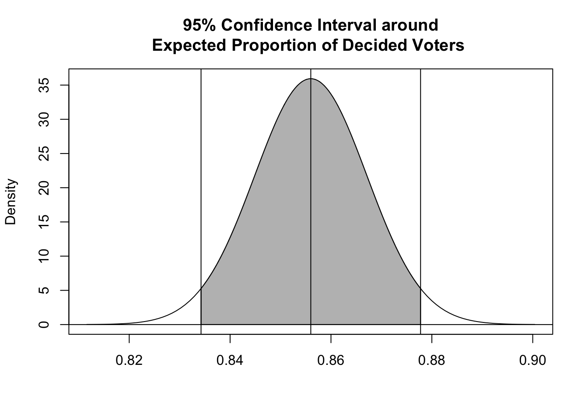
14.6 Small Sample CIs
Thus far, we have discussed creating confidence intervals for sample statistics based on the CLT and the normal distribution, and our intervals took the form:
mean\(±\)\(Z\) (the critical value, based on a quantile from the standard normal curve) \(\times\)standard error
But, when the size of our sample is small (\(n\) < 30), instead of using the normal distribution to calculate our CIs, statisticians typically use a different distribution to generate the relevant quantiles to multiply the standard error by… the t distribution (a.k.a., Gosset’s\(t\) or Student’s\(t\) distribution).
NOTE: This is a typical case that we will encounter, as we often do not have information about the population that a sample is drawn from!
The \(t\) distribution is a continuous probability distribution very similar in shape to the normal, and is generally used when dealing with statistics (such as means and standard deviations) that are estimated from a sample rather than being known parameters about a population. Any particular \(t\) distribution looks a lot like a normal distribution in that it is bell-shaped, symmetric, unimodal, and (if standardized) zero-centered.
The choice of the appropriate \(t\) distribution to use in any particular statistical test is based on the number of degrees of freedom (df), i.e., the number of individual components in the calculation of a given statistic (such as the mean or standard deviation) that are “free to change”.
We can thus think of the \(t\) distribution as representing a family of curves that, as the number of degrees of freedom increases, approaches the normal curve. At low numbers of degrees of freedom, the tails of the distribution get fatter and the peak of the distribution gets lower.
Confidence intervals based on the \(t\) distribution are of the form:
mean\(±\)\(T\) (the critical value, based on a quantile from the \(t\) distribution) \(\times\)standard error
The only change from CIs based on the normal distribution is that we have replaced the \(Z\) quantile of the standard normal with a \(T\) quantile.
Let’s explore this a bit…
Recall that a standard normal distribution is generated by normalizing a set of data (subtracting the mean from each observation and then dividing all of these differences by the standard deviation of the distribution)…
\[(\bar{x}-\mu)/\sigma\]
For a sample, if we subtract the population mean from each observation and then divide each difference, instead, by the standard error of the mean, i.e., \((\bar{x}-\mu)/SE\), the result is not a normal distribution, but rather a \(t\) distribution! We are taking into account sample size by dividing by the standard error of the mean rather than by the population standard deviation.
The code below plots a standard normal distribution in red and then superimposes several \(t\) distributions with varying degrees of freedom, specified using the df= argument.
mu <-0sigma <-1curve(dnorm(x, mu, 1), mu -4* sigma, mu +4* sigma, main ="Normal Distribution (red) and\nStudent's t Distributions (blue)",xlab ="x", ylab ="f(x)", col ="red", lwd =3)for (i inc(1, 2, 3, 4, 5, 10, 20, 100)) {curve(dt(x, df = i), mu -4* sigma, mu +4* sigma, main ="T Curve", xlab ="x",ylab ="f(x)", add =TRUE, col ="blue", lty =5)}
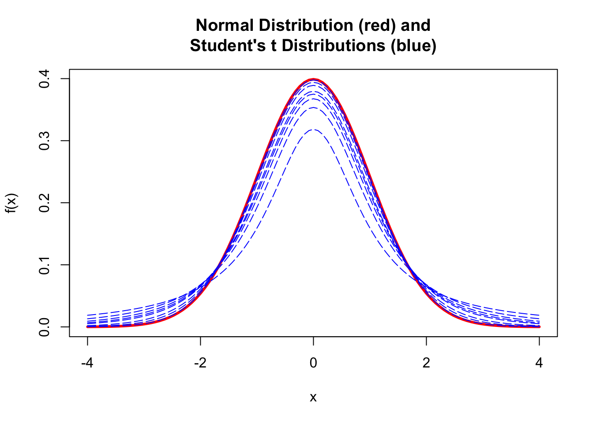
As for other distributions, R implements d (density), p (cumulative probability), q (quantile), and r (random draw) functions for the t distribution.
The fatter tails of the \(t\) distibution at small sample sizes lead naturally to more extreme quantile values given a specific probability than we would see for the normal distribution. If we define a CI based on quantiles of the \(t\) distribution, then, they will be correspondingly slightly wider than those based on the normal distribution for small values of \(df\).
We can see this in an example, where we draw samples from a population of values defined by a normal distribution with a particular mean and standard deviation. Recall that above we estimated the 95% CI for such a sample drawn from a normal distribution as follows:
n <-1e+05mu <-3.5sigma <-4alpha <-0.05x <-rnorm(n, mu, sigma) # x is our large populationhist(x)
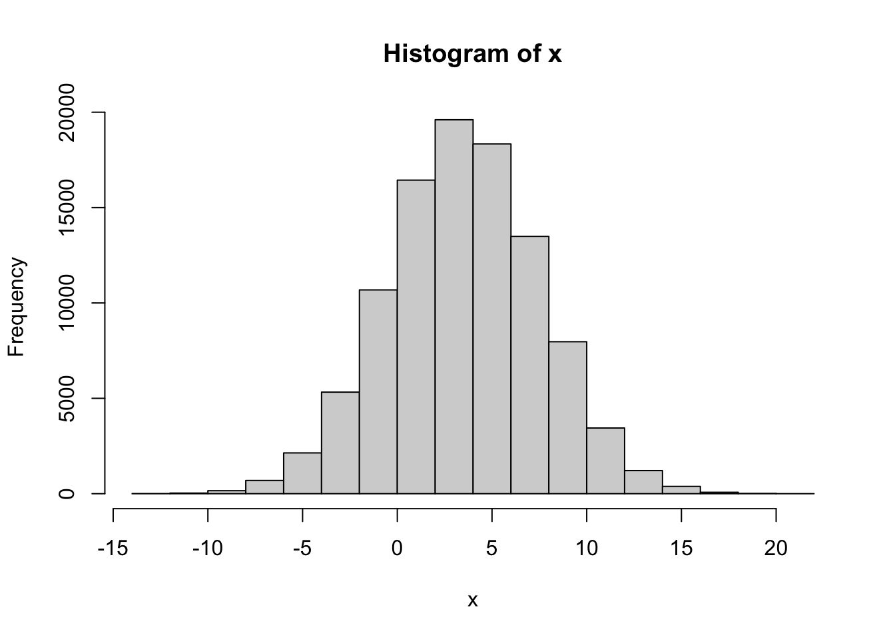
sample_size <-30s <-sample(x, size = sample_size, replace =FALSE) # s is a sample from that population(m <-mean(s))
## [1] 2.921573
(sd <-sd(s))
## [1] 4.198638
(se <-sd(s)/sqrt(length(s)))
## [1] 0.7665629
ci_normal <- m +c(-1, 1) *qnorm(1-0.05/2) * se# (1-alpha)/2 each in the upper and lower tails of the distributionci_normal
## [1] 1.419138 4.424009
Now, let’s look at the CIs calculated based using the \(t\) distribution for the same sample size. For sample size 30, the difference in the CIs is negligible.
ci_t <- m +c(-1, 1) *qt(1-0.05/2, df = sample_size -1) * se# (1-alpha)/2 each in the upper and lower tails of the distributionci_t
## [1] 1.353776 4.489371
However, if we use a sample size of 5, the equivalent CI based on the \(t\) distribution is much wider.
ci_normal <- m +c(-1, 1) *qnorm(1-0.05/2) * se# (1-alpha)/2 each in the upper and lower tails of the distributionci_normal
## [1] 3.028738 7.585479
ci_t <- m +c(-1, 1) *qt(1-0.05/2, df = sample_size -1) * se# (1-alpha)/2 each in the upper and lower tails of the distributionci_t
## [1] 2.079615 8.534602
14.7 Calculating CIs by Bootstrapping
An alternative (and arguably better) way to calculate a confidence interval for a given statistic is by “bootstrapping” from the data in a single sample using a Monte Carlo simulation process. Bootstrapping allows us to approximate a sampling distribution even without access to the population from which samples are drawn and without making any assumptions about the theoretical shape of the sampling distribution. The distribution we generate is sometimes referred to as a bootstrap distribution.
Writing our Own Bootstrap
Below, we use the sample() function to sample, with replacement, bootstrap replicates of equivalent sample size from our original vector of sample data, s, a total of 10000 times. This is just one approach to how we might perform bootstrapping, using {base} R functions.
NOTE: If we wanted to sample rows from a data frame instead of items from a vector, we could use the {dplyr} functions sample_n() or slice_sample().
n_boot <-10000boot <-vector(length = n_boot) # set up a dummy variable to hold our simulationsn <-length(s)# the size of each bootstrap sample should equivalent to the size our original# samplefor (i in1:n_boot) { boot[[i]] <-mean(sample(s, n, replace =TRUE))}
The following code visualizes the bootstrap sampling distribution we have just generated and also compares the various methods we have explored for calculating CIs.
hist(boot, breaks =25, ylim =c(0, 1600), xlab ="Mean", main ="Bootstrap Sampling Distribution")abline(v =mean(boot), col ="blue", lwd =3) # mean of our simulated samplestext(x =mean(boot) +0.2, y =700, "mean of bootstrap distribution ", col ="blue",srt =90, pos =3)abline(v =mean(s), col ="black", lwd =3, lty =2)# mean of our original vector of samples, stext(x =mean(s) -0.125, y =700, "mean of original sample", col ="black", srt =90,pos =3)abline(v =quantile(boot, 0.025), col ="blue")# lower ci bound inferred by bootstrappingabline(v =quantile(boot, 0.975), col ="blue")# upper ci bound inferred by bootstrappingtext(x =quantile(boot, 0.025) +0.25, y =700, "lower CI - bootstrap", col ="blue",srt =90, pos =3)text(x =quantile(boot, 0.975) -0.125, y =700, "upper CI - bootstrap", col ="blue",srt =90, pos =3)ci_normal <-mean(s) +c(-1, 1) *qnorm(1-0.05/2) * sciplot::se(s)ci_t <-mean(s) +c(-1, 1) *qt(1-0.05/2, df =length(s) -1) * sciplot::se(s)abline(v = ci_normal[1], col ="red")# calculated lower ci bound based on the se of our vector and assuming that our# observations are drawn from a normal distributionabline(v = ci_normal[2], col ="red")# calculated upper ci bound based on the se of our vector and assuming that our# observations are drawn from a normal distributiontext(x = ci_normal[1] -0.12, y =700, "lower CI - normal", col ="red", srt =90,pos =3)text(x = ci_normal[2] +0.245, y =700, "upper CI - normal", col ="red", srt =90,pos =3)abline(v = ci_t[1], col ="green")# calculated lower ci bound based on the se of our vector and assuming that our# observations are drawn from a t distributionabline(v = ci_t[2], col ="green")# calculated upper ci bound based on the se of our vector and assuming that our# observations are drawn from a t distributiontext(x = ci_t[1] -0.15, y =700, "lower CI - t", col ="green", srt =90, pos =3)text(x = ci_t[2] +0.275, y =700, "upper CI - t", col ="green", srt =90, pos =3)
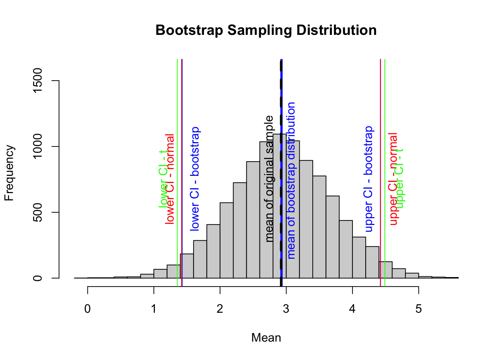
In this example, we used the quantile() function to return the observations satisfying the \(n^{th}\) quantile of our particular distribution of bootstrapped sample means. We use this function to define the lower and upper bounds for the bootstrap confidence interval around the mean of our variable, x.
Note that this compares very favorably to the CIs estimated by assuming that the sampling distribution follows either a normal or \(t\) distribution
Other Bootstrapping Options
As is typically the case with R, we have many choices for perform we might perform boostrapping! All of the options below are alternatives to the process we used above and generate similar bootstrap sampling distributions and corresponding CIs.
Using the {mosaic} Package
We are already familiar with the do(reps) * formulation from the {mosaic} package…
Alternatively, can use the rep_sample_n() function from the {infer} package to perform boostrapping. This function takes a data frame as an argument and randomly samples from that data frame a specified number of times (defined by the “size=” argument) to produce a large data object consisting of samples for each replicate and a column data that indicates which replicate each sample datum comes from. To use rep_sample_n(), we need to first convert our original sample vector s into a data frame. We can then use group_by() and summarize() from {dplyr} to generate a bootstrap sampling distribution, as we did above.
We can also use the fast and versatile {boot} package to do bootstrapping for any statistic.
For this approach, we define a custom function that we will use to generate the statistic we are interested in that we will then calculate for each bootstrapped sample:
library(boot)# here, the `stat()` function we define calculates the mean value of a# bootstrap sample taken with replacement from a vector of interest passed into# `data` the function we write for `statistic=` has two arguments, a data set# and a set of indices, generated at random by the `boot()` function, to sample# from the dataset this corresponds to the default argument `stype='i'` in the# `boot()` callstat <-function(data, indices) {return(mean(data[indices]))}
Then, we run the boot() function passing in the data to be resampled from (“data=”), the statistic we want to calculate (“statistic=”), and the number of bootstrap replicates (or “resamples”) we want using the argument “R=”.
boot <-boot(data = s, statistic = stat, R = n_boot) # stype='i' by default# the object returned includes a table, `t`, of `stat`s results from each# bootstrap
Again, it is interesting to plot the bootstrap sampling distibution and compare methods for calculating CIs.
# Visualizing the results and comparing methods for calculating CIshist(boot$t, breaks =25, ylim =c(0, 1500), xlab ="Mean", main ="Bootstrap Sampling Distribution\nfrom boot()")abline(v =mean(boot$t), col ="blue", lwd =3) # mean of our simulated samplestext(x =mean(boot$t) +0.2, y =700, "mean of bootstrap distribution ", col ="blue",srt =90, pos =3)abline(v =mean(s), col ="black", lwd =3, lty =2)# mean of our original vector of samples, stext(x =mean(s) -0.125, y =700, "mean of original sample", col ="black", srt =90,pos =3)# calculate and plot bootstrap CIslower_boot <-quantile(boot$t, 0.025)abline(v = lower_boot, col ="blue")upper_boot <-quantile(boot$t, 0.975)abline(v = upper_boot, col ="blue")text(x = lower_boot +0.25, y =700, "lower CI - bootstrap", col ="blue", srt =90,pos =3)text(x = upper_boot -0.125, y =700, "upper CI - bootstrap", col ="blue", srt =90,pos =3)
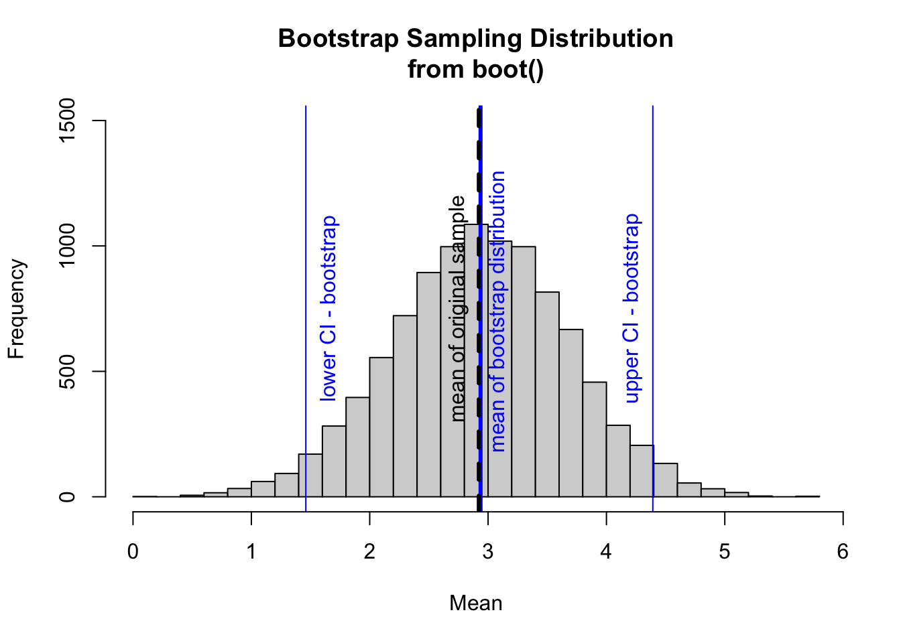
We can also use the boot.ci() function from the {boot} package to calculate CIs for using various methods, although the available methods do not include exactly the one we most want, i.e., the quantile method. Instead, all the options for boot.ci() generate equi-tailed CIs based on presumed theoretical shapes for the sampling distribution. The “basic” and “percent” intervals are the closest to the empirical quantile method.
hist(boot$t, breaks =25, ylim =c(0, 1500), xlab ="Mean", main ="Bootstrap Sampling Distribution\nfrom boot()")ci <-boot.ci(boot)abline(v = ci$basic[4], col ="green", lwd =2)abline(v = ci$basic[5], col ="green", lwd =2)abline(v = ci$percent[4], col ="red", lwd =2)abline(v = ci$percent[5], col ="red", lwd =2)abline(v = ci$bca[4], col ="purple", lwd =2)abline(v = ci$bca[5], col ="purple", lwd =2)abline(v = ci$normal[2], col ="black", lwd =2)abline(v = ci$normal[3], col ="black", lwd =2)
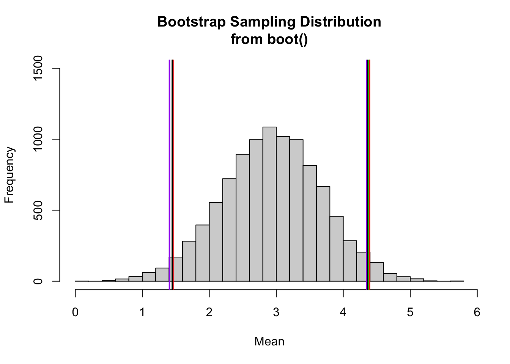
These alternative CIs are all very close to one another and are close to what we calculated using the quantile() approach!
CHALLENGE
How does the CI calculated by bootstrap simulation compare to that calculated based on assuming a normal or \(t\) distribution?
How does the width of the CI change with decreasing or increasing \(n\) (the number of observations drawn from your sample with replacement)? For example, if we set \(n\) at 5? At 50? At 500?
Concept Review
We can generate confidence intervals around a statistic (e.g., a mean) estimated from a sample as:
mean\(±\)critical value (i.e., the relevant quantile for the standardized version of a particular theoretical sampling distribution such as the normal or Student’s \(t\)) \(\times\)standard error in the statistic, which is typically estimated as the standard deviation of a sample divided by the square root of the sample size, or \(\frac{s}{\sqrt{n}}\)
Bootstrapping allows us to estimate confidence intervals by simulation from a sample, without assuming a particular shape for the sampling distribution
Source Code
# Confidence Intervals {#module-14}## Objectives> The objective of this module is to provide an introduction to *statistical inference* and *hypothesis testing* by introducing the idea of **confidence intervals** around statistics.## Preliminaries- Install and load this package in ***R***: [{boot}](https://cran.r-project.org/web/packages/manipulate/boot.pdf)- Load {tidyverse}, {manipulate}, and {mosaic}```{r}#| include: false#| message: falselibrary(tidyverse)library(manipulate)library(mosaic)library(boot)```## Confidence IntervalsThe standard error for a statistic that we calculate given its sampling distribution or that we estimate based on a particular sample can be used to derive another measure of uncertainty in the statistic value - the **confidence interval**, or **CI**. The CI is another way of describing a statistic's sampling distribution, and it plays a central role in basic inferential statistics.Conceptually, the confidence interval is an interval around our estimate of mean of the sampling distribution for a particular statistic (typically a mean), and it gives us a range of values into which subsequent estimates of a statistic would be expected to fall some critical proportion of the time, if the sampling exercise were to be repeated. We can talk thus about different confidence intervals (e.g., 50%, 95%, 99%), where, intuitively, higher confidence is associated with a wider interval. The "95% CI" around a statistic, for example, describes the range of values into which a new estimate of the statistic, derived from a subsequent sample, would be expected to fall 95% of the time. The "99% CI" around the initial statistic would be slightly wider, while the "50% CI" would be narrower.### Calculating Theoretical CIs {.unnumbered}Theoretical confidence intervals typically represent the range of values corresponding to the central X% of a given sampling distribution with a mean of $m$ and a standard deviation of $se$. We can calculate theoretical CIs in several ways.The typical way to calculate a confidence interval is as the **value of the statistic** being considered $±$ some **critical value** $\times$ the **standard error** of the statistic, where the **critical value** is determined with respect to the quantiles bracketing the central proportion of interest for a particular zero-centered, standardized *theoretical* distribution (e.g., the *standard normal* or the *Student's* $t$). The lower and upper limits of this CI thus should bracket the central proportion of interest of the sampling distribution of the statistic.Alternatively, we can calculate the lower and upper limits directly from the appropriate quantile values of the relevant non-standardized version of the particular *theoretical* distribution (e.g., the normal, with mean $m$ and standard deviation $se$).For large sample sizes ($n$ ≥ \~30), the theoretical distribution used to define the critical values and the relevant quantiles is typically the *normal distribution*, while for smaller sample sizes ($n$ \< \~30), a *Student's t distribution* is used. This is because, according to the **Central Limit Theorem** (see below), the sampling distribution for many summary statistics (such as the mean) tends to be normal when sample size is reasonably large.As an example CI calculation, we will generate a vector, **v**, of 10,000 random numbers selected from a normal distribution with a mean of 25 and standard deviation of 10. We then will estimate the mean, standard deviation, and standard error based on a sample of 40 observations drawn from that vector and then use these to calculate the theoretical 95% CI.First, we generate our vector of random numbers and calculate the relevant summary statistics...```{r}n <-10000mu <-25sigma <-10set.seed(1)v <-rnorm(n, mu, sigma)s <-sample(v, size =40, replace =FALSE)(m <-mean(s))(se <- sigma/sqrt(length(s))) # if population standard deviation is known(sd <-sd(s))(se <-sd(s)/sqrt(length(s))) # if population standard deviation is unknown# alternatively, we could use `sciplot::se(s)`(se <- sciplot::se(s))```Now, to calculate the 95% CI around our estimate of the mean, we need to calculate the critical values that delimit the central 95% of the standard normal distribution and then use these to define the upper and lower bounds of the 95% CI around our sample mean. The central 95% of a distribution is that falling between the 2.5% and 97.5% quantiles (i.e., all but 2.5% of the distribution in the lower and upper tails). If we define $\alpha$ as $1-CI/100$, then what we want to find is the $\alpha/2$ and $1 - (\alpha/2)$ quantiles, i.e., the $0.025$ and $0.975$ quantiles. [As we will see below, mathematically, this is equivalent to ± the $0.975$ quantile.]We use the "quantile" function for the standard normal function (`qnorm()` with `mean=0` and `sd=1`, which are the default argument values) to generate these critical values.Recall that when we give the `qnorm()` function a particular percentile value as an argument, it returns a number, $X$, below which that proportion of the cumulative probability distribution falls, and when we are considering a standard normal distribution, $X$ is in units of standard deviations. Thus, `qnorm(0.025, mean=0, sd=1)` tells us the number of standard deviations (roughly -1.96) away from a mean (of 0) that corresponds to up to 2.5% of the cumulative probability distribution for a standard normal curve. Similarly, `qnorm(0.975, mean=0, sd=1)` tells us the number of standard deviations (roughly +1.96) away from the mean up to which 97.5% of the standard normal distribution falls. 95% of the standard normal distribution falls between these two values. Thus, to calculate the CI for our sampling distribution, we can do the following:```{r}percent_ci <-95alpha <-1- percent_ci/100# alpha = 0.05lower <- m +qnorm(alpha /2) * se# where qnorm(alpha /2) is the 2.5% quantile of the standard normal distributionupper <- m +qnorm(1- alpha /2) * se# where qnorm(1 - alpha / 2) is the 97.5% quantile of the standard normal distribution(ci <-c(lower, upper))```An easier way to do this is simply as follows:```{r}(ci <- m +c(-1, 1) *qnorm(1- alpha /2) * se)```because these ways of calculating the lower CI bound are equivalent:```{r}(lower <- m +1*qnorm(alpha /2) * se)(lower <- m +-1*qnorm(1- alpha /2) * se)```We could also do this...```{r}# get the value associated with the alpha / 2 lower tail(lower <- m +qnorm(alpha /2) * se)# get the value associated with the alpha / 2 upper tail(upper <- m +qnorm(alpha /2, lower.tail =FALSE) * se)```And we can also make our own generic `CI()` function based on assuming that our the sampling distribution for our estimate of the mean is normal:```{r}CI <-function(x, level =0.95) { alpha <-1- level ci <-mean(x) +c(-1, 1) *qnorm(1- (alpha /2)) *sqrt(var(x) /length(x))return(ci)}CI(s)```Finally, we could also characterize the central CI% of the sampling distribution directly by calling the `qnorm()` function on a non-standardized normal distribution. This is less common, though, because it is less easily applied to distributions other than the normal family (e.g., to the $t$ distribution).```{r}(lower <-qnorm(alpha /2, m, se))(upper <-qnorm(1- alpha /2, m, se))```The following code will let us interactively visualize CIs around an estimate of a mean with a normal sampling distribution.```{r}#| eval: falsemanipulate(ggplot(data =data.frame(x =c(sampling_dist_mean -4* sampling_dist_sd, sampling_dist_mean +4* sampling_dist_sd)),aes(x)) +stat_function(fun = dnorm,args =list(mean = sampling_dist_mean, sd = sampling_dist_sd),n =1000) +xlab("Sampling Distribution Mean") +ylab("") +labs(title ="Exploring Confidence Intervals",subtitle =paste0("Sampling Distribution SD (= SE): ", sampling_dist_sd, "\n", round(percent_CI, 2), "% CI: ",round(sampling_dist_mean -qnorm((1- percent_CI /100) /2) * sampling_dist_sd, 2)," to ",round(sampling_dist_mean +qnorm((1- percent_CI /100) /2) * sampling_dist_sd, 2) ) ) +geom_vline(xintercept = sampling_dist_mean -qnorm((1- percent_CI /100) /2) * sampling_dist_sd,color ="blue", linetype ="dashed" ) +geom_vline(xintercept = sampling_dist_mean +qnorm((1- percent_CI /100) /2) * sampling_dist_sd,color ="blue", linetype ="dashed" ) +geom_vline(xintercept = sampling_dist_mean,color ="black", linetype ="solid" ) +stat_function(fun = dnorm,xlim =c( sampling_dist_mean -qnorm((1- percent_CI /100) /2) * sampling_dist_sd, sampling_dist_mean +qnorm((1- percent_CI /100) /2) * sampling_dist_sd ),args =list(mean = sampling_dist_mean, sd = sampling_dist_sd),n =1000, geom ="area", fill ="red", alpha =0.5, color ="red" ),sampling_dist_mean =slider(-100, 100, initial =0, step =10),sampling_dist_sd =slider(0, 100, initial =1, step =1),percent_CI =slider(0, 99, initial =95, step =1))```### Interpretation of CIs {.unnumbered}There are two ways that CIs are generally interpreted:- Based on the given data (with a particular mean, variance, and sample size), we are $X$% confident that the true mean of the population lies between the lower and upper bounds.- The mean of a repeated sample of the same size drawn from this same underlying distribution is expected to fall into the given interval $X$% of the time.## The Central Limit TheoremOur construction of CIs thus far has implicitly taken advantage of one of the most important theorems in statistics, the **Central Limit Theorem (CLT)**. The key importance of the CLT for us is that it states that the sampling distribution of averages (or sums or other summary statistics...) of "independent and identically distributed" (or $iid$) random variables approaches a normal distribution as the sample size increases. It is this fact that allows us to have a good sense of the mean and distribution of average events in a population even though we only observe one or a small number of samples of those events and even though we do not know what the actual population distribution is! In fact, the CLT says nothing about the probability distribution for events in the original population, and that is exactly where its usefulness lies... that original probability distribution can be normal, skewed, exponential, or even all kinds of odd!> **TL/DR:** The CLT means can we typically assume normality for the sampling distribution, i.e., for the distribution of the **sample mean** (or of the sample sum or the sample mode, etc...) no matter what kind of probability distribution characterizes the initial population, **as long as our sample size is large enough and our samples are independent and identically distributed**. It is thus the CLT that allows us to make inferences about a population based on a sample.Just to explore this a bit, let's do some simulations. We are going to take lots of averages of samples from a particular *non-normal* distribution and then look at the distribution of those averages.Imagine we have some event that occurs in a population according to some probability mass function like the Poisson where we know $\lambda=14$. Recall that the expectations of $\mu$ and $\sigma^2$ for the Poisson distribution are both equal to $\lambda$.Now let's imagine taking a bunch of random samples of size 10 from this population. We will take 1000 random samples of this size, calculate the average of each sample, and plot a histogram of those averages... it will be close to normal, and the standard deviation of those averages - i.e., the SD of the sampling distribution - should be roughly equal to the estimated standard error, i.e., the square root of (expected variance / sample size). Recall that for a Poisson distribution that $\lambda$ is the expected variance, so the estimated standard error is simply the $\sqrt{\lambda/n}$```{r}#| fig-height: 3lambda <-14n <-10(se <-sqrt(lambda/n))# the estimated SE, here, based on an estimate of the population variance# if availablepar(mfrow=c(1, 3))hist(rpois(10000, lambda = lambda),probability =TRUE,xlab ="X",main ="Original Distribution")x <-vector(length=1000) # dummy variable to hold sample meansfor (i in1:1000){ x[[i]] <-mean(rpois(n=n, lambda=lambda))}hist( x,breaks =seq(from =min(x),to =max(x),length.out =20 ),probability =TRUE,xlab ="Mean x",main ="Sampling Distribution")(se <-sd(x))# the estimated SE, here based on the standard deviation of the actual sampling distributionqqnorm(x)qqline(x)```Let's now do the same for samples of size 1000. We see that the mean of the sampling distribution stays essentially the same, the distribution is still normal, but the standard deviation - the spread - of the sampling distribution is lower.```{r}#| fig-height: 3lambda <-14n <-1000(se <-sqrt(lambda/n))# the estimated SE, here, based on an estimate of the population variance if availablepar(mfrow=c(1, 3))hist(rpois(10000, lambda = lambda),probability =TRUE,xlab ="x",main ="Original Distribution")x <-vector(length =1000)for (i in1:1000){ x[[i]] <-mean(rpois(n = n, lambda = lambda))}hist( x,breaks =seq(from =min(x),to =max(x),length.out =20 ),probability =TRUE,xlab ="Mean X",main ="Sampling Distribution")(se <-sd(x))# the estimated SE, here based on the standard deviation of the actual sampling distributionqqnorm(x)qqline(x)```Note that the sampling distribution gets narrower as the sample size increases.We can convert the sampling distribution to a standard normal by subtracting off the mean of the distribution and dividing by the standard deviation and then plotting a histogram of those values along with a normal curve.```{r}#| fig-height: 3par(mfrow=c(1, 2))hist( x,breaks =seq(from =floor(min(x)),to =ceiling(max(x)),length.out =20 ),probability =TRUE)z <- (x-mean(x))/sd(x) # converts the vector of means to z scoreshist(z, breaks=seq(from=min(z), to=max(z), length.out=20), probability=TRUE, ylim =c(0,0.5)) # plots the histogram of z scorescurve(dnorm(x,0,1),-4,4, ylim=c(0,.5), xlab="Z", ylab="Density", add=TRUE) # plots a standard normal curve```Pretty normal looking, right?Here's an example of the CLT in action using the `sum()` of our random variables instead of the `mean()` as the statistic of interest ...```{r}#| fig-height: 3lambda <-14n <-1000par(mfrow=c(1,3))hist(rpois(10000, lambda = lambda),probability =TRUE,xlab ="X",main ="Original Distribution")x <-vector(length=1000)for (i in1:1000){ x[[i]] <-sum(rpois(n=n, lambda=lambda))}hist( x,breaks =seq(from =min(x),to =max(x),length.out =20 ),probability =TRUE,xlab ="Sum X",main ="Sampling Distribution")# convert the sampling distribution to standard normalz <- (x-mean(x))/sd(x)hist(z, breaks=seq(from=-4, to=4, length.out=20), probability=TRUE)# plots a standard normal curvecurve(dnorm(x,0,1),-4,4, ylim=c(0,0.5), xlab="Z", ylab="Density", add=TRUE)```Again, pretty normal looking!Trying this for an intial beta rather than Poisson distribution...```{r}#| fig-height: 3alpha <-1.1beta <-2.9n <-1000par(mfrow=c(1,3))hist(rbeta(10000, shape1 = alpha, shape2 = beta),probability =TRUE,xlab ="X",main ="Original Distribution")x <-vector(length=1000)for (i in1:1000){ x[[i]] <-mean(rbeta(n=n, shape1 = alpha, shape2 = beta))}hist( x,breaks =seq(min(x), max(x), length.out =20),probability =TRUE,xlab ="Mean X",main ="Sampling Distribution")# convert the sampling distribution to standard normalz <- (x-mean(x))/sd(x)hist(z, breaks=seq(from=-4, to=4, length.out=20), probability=TRUE)# plots a standard normal curvecurve(dnorm(x,0,1),-4,4, ylim=c(0,0.5), xlab="Z", ylab="Density", add=TRUE)```Once again, the sampling distribution is normal, even though the original distribution is far from it!**Take Home Points:**[1] The CLT states that, regardless of the underlying probability distribution of a population of **independent, identically distributed** ($iid$) random variables, the distribution of a statistic (e.g., means, or sums or standard deviations, etc...) for samples drawn from that underlying distribution:- will be approximately normal,- will be centered at the population mean for the statistic, and - will have a standard deviation roughly equal to the standard error of the mean for the statistic.Additionally, it suggests that variables that are expected to be the sum of multiple independent processes (e.g., measurement errors) will also have distributions that are nearly normal.[2] Calculating a *statistic* based on this distribution (e.g., the mean) and adding/subtracting the relevant *standard quantile* $\times$ the *standard error* yields a confidence interval for the relevant statistic, which gets wider as the coverage increases and gets narrower with less variability or larger sample sizes.[3] As sample size increases, the standard error of the statistic decreases and the sampling distribution becomes more and more normal (i.e., has less skew and kurtosis, which are higher order moments of the distribution).For a nice interactive simulation demonstrating the Central Limit Theorem, check out [this cool website](http://onlinestatbook.com/stat_sim/sampling_dist/index.html).## CIs for Sample ProportionsSo far, we've talked about CIs for sample means of a continuous random variable, but what about for other statistics, e.g., sample proportions for discrete binary variables. For example, if you have a sample of **n** trials where you record the success or failure of a binary event, you can obtain an estimate of the proportion of successes, $x/n$. If you perform another **n** trials, the new estimate will vary from sample to sample in the same way that averages of a continuous random variable (e.g., zombie age) will vary.Taking a similar approach as we did above for normally distributed continuous random variables, we can generate confidence intervals for the proportion of successes across trials, i.e., for a discrete binary variable, by taking the expectation and adding/subtracting a critical value $\times$ a standard error.Recall from our discussion of discrete random binary variables that the expectation for proportion of successes, which we will denote as $\pi$ (where $\pi$, for "proportion", is analogous to $\mu$, for "mean") is simply the average number of successes across multiple trials, and the expectation for the variance in this proportion is $\pi \times (1-\pi)$.As for the mean of a continuous random variable, the expected sampling distribution for the proportion of successes across many trials of sample size $n$ is approximately normal and centered at $\pi$, and its standard deviation is estimated by $\sqrt{\pi(1-\pi)/n}$, which is, essentially, the standard error of the mean: it is the square root of (the expected variance / sample size). As above for $\mu$, if we do not already have a population estimate for $\pi$, we can estimate this from a sample as $\hat{p}=x/n$> **NOTE:** The approximation of normality for the sampling distribution of proportion of successes holds true only if both $n\times\pi$ and $n\times(1-\pi)$ are greater than roughly 5, so we should always check this when working with proportion data!### CHALLENGE {.unnumbered}Suppose a polling group in the United States is interested in the proportion of voting-age citizens in their state that already know they will vote for Bernie Sanders in the upcoming presidential election. The group obtains a "yes"" or "no" answer from 1000 randomly selected individuals. Of these individuals, 856 say they know they'll vote for Sanders How would we characterize the mean and variability associated with this proportion?```{r}n <-1000x <-856p_hat <- x/n # our estimate of pip_hat```Are $n\times\pi$ and $n\times(1-\pi)$ both \> 5? Yes!```{r}n * p_hatn * (1- p_hat)se <-sqrt((p_hat)*(1-p_hat)/n) # estimated SE for proportion datase```So, what is the 95% CI around our estimate of the proportion of people who already know how they will vote?```{r}par(mfrow=c(1,1))curve(dnorm(x, mean = p_hat, sd = se), p_hat -4* se, p_hat +4* se,xlab ="",ylab ="Density",main ="95% Confidence Interval around\nExpected Proportion of Decided Voters ")upper <- p_hat +qnorm(0.975) * selower <- p_hat -qnorm(0.975) * se(ci <-c(lower, upper))# or(ci <-p_hat +c(-1,1) *qnorm(0.975) * se)polygon(cbind(c( ci[1], seq(from = ci[1],to = ci[2],length.out =1000 ), ci[2]), c(0, dnorm(seq(from = ci[1],to = ci[2],length.out =1000 ),mean = p_hat,sd = se), 0)), border ="black", col ="gray")abline(v=ci)abline(v=p_hat)abline(h=0)```## Small Sample CIsThus far, we have discussed creating confidence intervals for sample statistics based on the CLT and the **normal** distribution, and our intervals took the form:*mean* $±$ $Z$ (the critical value, based on a quantile from the standard normal curve) $\times$ *standard error*But, when the size of our sample is small ($n$ \< 30), instead of using the normal distribution to calculate our CIs, statisticians typically use a different distribution to generate the relevant quantiles to multiply the standard error by... the **t distribution** (a.k.a., **Gosset's** $t$ or **Student's** $t$ distribution).> **NOTE:** This is a **typical** case that we will encounter, as we often do not have information about the population that a sample is drawn from!The $t$ distribution is a continuous probability distribution very similar in shape to the normal, and is generally used when dealing with *statistics* (such as means and standard deviations) that are estimated from a sample rather than being known *parameters* about a population. Any particular $t$ distribution looks a lot like a normal distribution in that it is bell-shaped, symmetric, unimodal, and (if standardized) zero-centered.The choice of the appropriate $t$ distribution to use in any particular statistical test is based on the number of **degrees of freedom (df)**, i.e., the number of individual components in the calculation of a given statistic (such as the mean or standard deviation) that are "free to change".We can thus think of the $t$ distribution as representing a *family of curves* that, as the number of degrees of freedom increases, approaches the normal curve. At low numbers of degrees of freedom, the tails of the distribution get fatter and the peak of the distribution gets lower.Confidence intervals based on the $t$ distribution are of the form:*mean* $±$ $T$ (the critical value, based on a quantile from the $t$ distribution) $\times$ *standard error*The only change from CIs based on the normal distribution is that we have replaced the $Z$ quantile of the standard normal with a $T$ quantile.Let's explore this a bit...Recall that a standard normal distribution is generated by normalizing a set of data (subtracting the mean from each observation and then dividing all of these differences by the standard deviation of the distribution)...$$(\bar{x}-\mu)/\sigma$$For a sample, if we subtract the population mean from each observation and then divide each difference, instead, by the standard error of the mean, i.e., $(\bar{x}-\mu)/SE$, the result is not a normal distribution, but rather a $t$ distribution! We are taking into account sample size by dividing by the standard error of the mean rather than by the population standard deviation.The code below plots a standard normal distribution in red and then superimposes several $t$ distributions with varying degrees of freedom, specified using the `df=` argument.```{r}mu <-0sigma <-1curve(dnorm(x, mu, 1), mu -4* sigma, mu +4* sigma,main ="Normal Distribution (red)\ and\nStudent's t Distributions (blue)",xlab ="x",ylab ="f(x)",col ="red",lwd =3)for (i inc(1,2,3,4,5,10,20,100)) {curve(dt(x, df = i), mu -4* sigma, mu +4* sigma,main ="T Curve",xlab ="x",ylab ="f(x)",add =TRUE,col ="blue",lty =5 )}```As for other distributions, ***R*** implements `d` (density), `p` (cumulative probability), `q` (quantile), and `r` (random draw) functions for the t distribution.The fatter tails of the $t$ distibution at small sample sizes lead naturally to more extreme quantile values given a specific probability than we would see for the normal distribution. If we define a CI based on quantiles of the $t$ distribution, then, they will be correspondingly slightly **wider** than those based on the normal distribution for small values of $df$.We can see this in an example, where we draw samples from a population of values defined by a normal distribution with a particular mean and standard deviation. Recall that above we estimated the 95% CI for such a sample drawn from a normal distribution as follows:```{r}n <-100000mu <-3.5sigma <-4alpha <-0.05x <-rnorm(n, mu, sigma) # x is our large populationhist(x)sample_size <-30s <-sample(x, size = sample_size, replace =FALSE) # s is a sample from that population(m <-mean(s))(sd <-sd(s))(se <-sd(s)/sqrt(length(s)))ci_normal <- m +c(-1, 1) *qnorm(1-0.05/2) * se# (1-alpha)/2 each in the upper and lower tails of the distributionci_normal```Now, let's look at the CIs calculated based using the $t$ distribution for the same sample size. For sample size 30, the difference in the CIs is negligible.```{r}ci_t <- m +c(-1, 1) *qt(1-0.05/2, df = sample_size -1) * se# (1-alpha)/2 each in the upper and lower tails of the distributionci_t```However, if we use a sample size of 5, the equivalent CI based on the $t$ distribution is much wider.```{r}sample_size <-5small_s <-sample(x, size = sample_size, replace =FALSE)(m <-mean(small_s))(sd <-sd(small_s))(se <-sd(small_s)/sqrt(length(small_s)))ci_normal <- m +c(-1, 1) *qnorm(1-0.05/2) * se# (1-alpha)/2 each in the upper and lower tails of the distributionci_normalci_t <- m +c(-1, 1) *qt(1-0.05/2, df = sample_size -1) * se# (1-alpha)/2 each in the upper and lower tails of the distributionci_t```## Calculating CIs by BootstrappingAn alternative (and arguably **better**) way to calculate a confidence interval for a given statistic is by "bootstrapping" from the data in a single sample using a Monte Carlo simulation process. Bootstrapping allows us to approximate a sampling distribution even without access to the population from which samples are drawn and without making any assumptions about the theoretical shape of the sampling distribution. The distribution we generate is sometimes referred to as a *bootstrap distribution*.### Writing our Own Bootstrap {.unnumbered}Below, we use the `sample()` function to sample, **with replacement**, bootstrap replicates of equivalent sample size from our original vector of sample data, **s**, a total of 10000 times. This is just one approach to how we might perform bootstrapping, using {base} ***R*** functions.> **NOTE:** If we wanted to sample rows from a data frame instead of items from a vector, we could use the {dplyr} functions `sample_n()` or `slice_sample()`.```{r}#| fig-keep: lastn_boot <-10000boot <-vector(length=n_boot) # set up a dummy variable to hold our simulationsn <-length(s)# the size of each bootstrap sample should equivalent to the size our original samplefor (i in1:n_boot){ boot[[i]] <-mean(sample(s, n, replace=TRUE))}```The following code visualizes the bootstrap sampling distribution we have just generated and also compares the various methods we have explored for calculating CIs.```{r}hist(boot, breaks =25,ylim =c(0,1600),xlab ="Mean",main ="Bootstrap Sampling Distribution")abline(v =mean(boot), col="blue", lwd =3) # mean of our simulated samplestext(x =mean(boot) +0.2, y =700, "mean of bootstrap distribution ",col ="blue", srt =90, pos =3)abline(v =mean(s), col="black", lwd =3, lty =2)# mean of our original vector of samples, stext(x =mean(s) -0.125, y =700, "mean of original sample",col ="black", srt =90, pos =3)abline(v =quantile(boot, 0.025), col ="blue")# lower ci bound inferred by bootstrappingabline(v =quantile(boot, 0.975), col ="blue")# upper ci bound inferred by bootstrappingtext(x =quantile(boot, 0.025) +0.25, y =700, "lower CI - bootstrap",col ="blue", srt =90, pos =3)text(x =quantile(boot, 0.975) -0.125, y =700, "upper CI - bootstrap",col ="blue", srt =90, pos =3)ci_normal <-mean(s) +c(-1, 1) *qnorm(1-0.05/2) * sciplot::se(s)ci_t <-mean(s) +c(-1, 1) *qt(1-0.05/2, df =length(s) -1) * sciplot::se(s)abline(v = ci_normal[1], col ="red")# calculated lower ci bound based on the se of our vector and# assuming that our observations are drawn from a normal distributionabline(v = ci_normal[2], col ="red")# calculated upper ci bound based on the se of our vector and# assuming that our observations are drawn from a normal distributiontext(x = ci_normal[1] -0.12, y =700, "lower CI - normal",col ="red", srt =90, pos =3)text(x = ci_normal[2] +0.245, y =700, "upper CI - normal",col ="red", srt =90, pos =3)abline(v = ci_t[1], col ="green")# calculated lower ci bound based on the se of our vector and# assuming that our observations are drawn from a t distributionabline(v = ci_t[2], col ="green")# calculated upper ci bound based on the se of our vector and# assuming that our observations are drawn from a t distributiontext(x = ci_t[1] -0.15, y =700, "lower CI - t", col ="green",srt =90 , pos =3)text(x = ci_t[2] +0.275, y =700, "upper CI - t", col ="green",srt =90 , pos =3)```In this example, we used the `quantile()` function to return the observations satisfying the $n^{th}$ quantile of our particular distribution of bootstrapped sample means. We use this function to define the lower and upper bounds for the bootstrap confidence interval around the mean of our variable, **x**.Note that this compares very favorably to the CIs estimated by assuming that the sampling distribution follows either a normal or $t$ distribution### Other Bootstrapping Options {.unnumbered}As is typically the case with ***R***, we have many choices for perform we might perform boostrapping! All of the options below are alternatives to the process we used above and generate similar bootstrap sampling distributions and corresponding CIs.#### Using the {mosaic} Package {.unnumbered}We are already familiar with the `do(reps) *` formulation from the {mosaic} package...```{r}boot <-do(n_boot) *mean(~sample(s, length(s), replace =TRUE))hist(boot$mean,breaks =25,ylim =c(0, 1600),xlab ="Mean",main ="Bootstrap Sampling Distribution\nfrom do(reps) *")```#### Using the {infer} Package {.unnumbered}Alternatively, can use the `rep_sample_n()` function from the {infer} package to perform boostrapping. This function takes a data frame as an argument and randomly samples from that data frame a specified number of times (defined by the "size=" argument) to produce a large data object consisting of samples for each replicate and a column data that indicates which replicate each sample datum comes from. To use `rep_sample_n()`, we need to first convert our original sample vector **s** into a data frame. We can then use `group_by()` and `summarize()` from {dplyr} to generate a bootstrap sampling distribution, as we did above.```{r}#| warning: falselibrary(infer)boot <-as.data.frame(s) |>rep_sample_n(size =length(s), replace =TRUE, reps = n_boot) |>group_by(replicate) |>summarize(mean =mean(s))hist(boot$mean,breaks =25,ylim =c(0, 1500),xlab ="Mean",main ="Bootstrap Sampling Distribution\nfrom rep_sample_n()")```#### Using the {boot} Package {.unnumbered}We can also use the fast and versatile {boot} package to do bootstrapping for any statistic.For this approach, we define a custom function that we will use to generate the statistic we are interested in that we will then calculate for each bootstrapped sample:```{r}#| warning: false#| message: falselibrary(boot)# here, the `stat()` function we define calculates the mean value of a bootstrap sample# taken with replacement from a vector of interest passed into `data`# the function we write for `statistic=` has two arguments, a data set and a# set of indices, generated at random by the `boot()` function, to sample# from the dataset# this corresponds to the default argument `stype="i"` in the `boot()` callstat <-function(data, indices) {return(mean(data[indices])) }```Then, we run the `boot()` function passing in the data to be resampled from ("data="), the statistic we want to calculate ("statistic="), and the number of bootstrap replicates (or "resamples") we want using the argument "R=".```{r}#| fig-keep: lastboot <-boot(data = s, statistic = stat, R = n_boot) # stype="i" by default# the object returned includes a table, `t`, of `stat`s results from each# bootstrap```Again, it is interesting to plot the bootstrap sampling distibution and compare methods for calculating CIs.```{r}#| fig-keep: last# Visualizing the results and comparing methods for calculating CIs# hist(boot$t, breaks =25,ylim =c(0, 1500),xlab ="Mean",main ="Bootstrap Sampling Distribution\nfrom boot()")abline(v =mean(boot$t), col="blue", lwd =3) # mean of our simulated samplestext(x =mean(boot$t) +0.2, y =700, "mean of bootstrap distribution ",col ="blue", srt =90, pos =3)abline(v=mean(s), col="black", lwd =3, lty =2)# mean of our original vector of samples, stext(x =mean(s) -0.125, y =700, "mean of original sample",col ="black", srt =90, pos =3)# calculate and plot bootstrap CIslower_boot <-quantile(boot$t, 0.025)abline(v = lower_boot, col ="blue")upper_boot <-quantile(boot$t, 0.975)abline(v = upper_boot, col ="blue")text(x = lower_boot +0.25, y =700, "lower CI - bootstrap",col ="blue", srt =90, pos =3)text(x = upper_boot -0.125, y =700, "upper CI - bootstrap",col ="blue", srt =90, pos =3)```We can also use the `boot.ci()` function from the {boot} package to calculate CIs for using various methods, although the available methods do not include exactly the one we most want, i.e., the quantile method. Instead, all the options for `boot.ci()` generate equi-tailed CIs based on presumed theoretical shapes for the sampling distribution. The "basic" and "percent" intervals are the closest to the empirical quantile method.```{r}#| fig-keep: last#| warning: falsehist(boot$t, breaks =25,ylim =c(0, 1500),xlab ="Mean",main ="Bootstrap Sampling Distribution\nfrom boot()")ci <-boot.ci(boot)abline(v = ci$basic[4], col ="green", lwd =2)abline(v = ci$basic[5], col ="green", lwd =2)abline(v = ci$percent[4], col ="red", lwd =2)abline(v = ci$percent[5], col ="red", lwd =2)abline(v = ci$bca[4], col ="purple", lwd =2)abline(v = ci$bca[5], col ="purple", lwd =2)abline(v = ci$normal[2], col ="black", lwd =2)abline(v = ci$normal[3], col ="black", lwd =2)```These alternative CIs are all very close to one another and are close to what we calculated using the `quantile()` approach!### CHALLENGE {.unnumbered}- How does the CI calculated by bootstrap simulation compare to that calculated based on assuming a normal or $t$ distribution?- How does the width of the CI change with decreasing or increasing $n$ (the number of observations drawn from your sample with replacement)? For example, if we set $n$ at 5? At 50? At 500?```{r}#| include: falsedetach(package:infer)detach(package:boot)detach(package:manipulate)detach(package:mosaic)detach(package:tidyverse)```---## Concept Review {.unnumbered}- We can generate confidence intervals around a statistic (e.g., a mean) estimated from a sample as: - *mean* $±$ *critical value* (i.e., the relevant quantile for the standardized version of a particular theoretical sampling distribution such as the normal or Student's $t$) $\times$ *standard error* in the statistic, which is typically estimated as the standard deviation of a sample divided by the square root of the sample size, or $\frac{s}{\sqrt{n}}$- Bootstrapping allows us to estimate confidence intervals by simulation from a sample, without assuming a particular shape for the sampling distribution